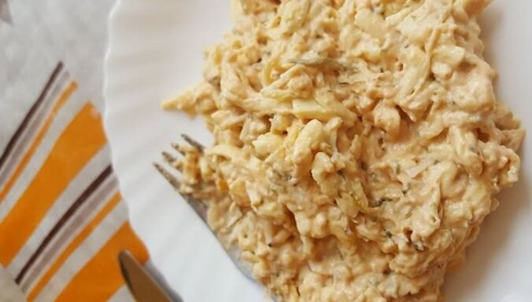

Atpakaļ uz manām receptēm
Valmieras salāti

Salāti - vienkārši pagatavojami un ļoti sātīgi. Salātus var izmantot arī kā uzkodu,
liekot uz maizītēm vai ietinot lavašā
- 400 g siers
- 4 marinēti gurķi
- 4 vārītas olas
- 4 ĒK majonēze
- 2 ĒK skābs krējums
- 2 ĒK kečups
Pagatavošana:
- Vārītas olas, sieru un marinētus gurķus sarīvē, liek bļodā.
- Pievieno kečupu, majonēzi, skābu krējumu un samaisa.
Labu apetīti!
Recepte delfi.lv Tasty